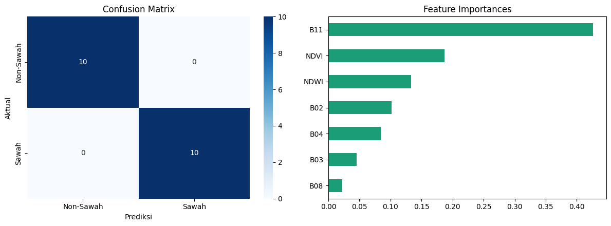
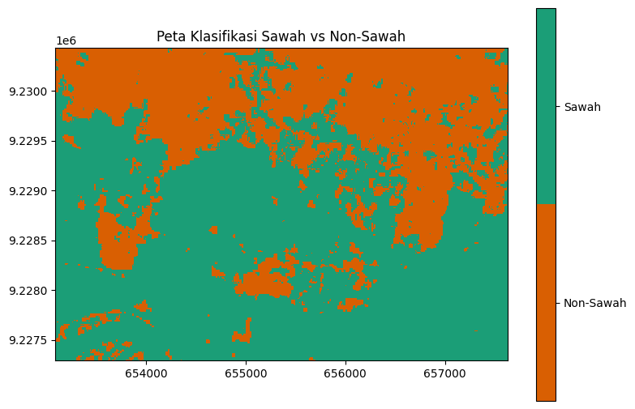

Klasifikasi Spasial Lahan Sawah dan Non-Sawah Menggunakan Citra Sentinel-2A#
Bagian ini mendokumentasikan tahapan akuisisi citra satelit optik Sentinel-2A (Level-2A) dalam format GeoTIFF (.tif) melalui openEO, ekstraksi nilai spektral pada 100 titik sampel (50 sampel Sawah dan 50 sampel Non-Sawah) yang telah dilabeli melalui QGIS, hingga pemodelan klasifikasi biner (2 kelas).
Instalasi Library Yang Digunakan#
pip install geopandas
Requirement already satisfied: geopandas in c:\users\faziz\appdata\local\programs\python\python39\lib\site-packages (1.0.1)Note: you may need to restart the kernel to use updated packages.
Requirement already satisfied: numpy>=1.22 in c:\users\faziz\appdata\local\programs\python\python39\lib\site-packages (from geopandas) (2.0.2)
Requirement already satisfied: pyogrio>=0.7.2 in c:\users\faziz\appdata\local\programs\python\python39\lib\site-packages (from geopandas) (0.11.1)
Requirement already satisfied: packaging in c:\users\faziz\appdata\local\programs\python\python39\lib\site-packages (from geopandas) (26.0)
Requirement already satisfied: pandas>=1.4.0 in c:\users\faziz\appdata\local\programs\python\python39\lib\site-packages (from geopandas) (2.3.3)
Requirement already satisfied: pyproj>=3.3.0 in c:\users\faziz\appdata\local\programs\python\python39\lib\site-packages (from geopandas) (3.6.1)
Requirement already satisfied: shapely>=2.0.0 in c:\users\faziz\appdata\local\programs\python\python39\lib\site-packages (from geopandas) (2.0.7)
Requirement already satisfied: python-dateutil>=2.8.2 in c:\users\faziz\appdata\local\programs\python\python39\lib\site-packages (from pandas>=1.4.0->geopandas) (2.9.0.post0)
Requirement already satisfied: pytz>=2020.1 in c:\users\faziz\appdata\local\programs\python\python39\lib\site-packages (from pandas>=1.4.0->geopandas) (2025.2)
Requirement already satisfied: tzdata>=2022.7 in c:\users\faziz\appdata\local\programs\python\python39\lib\site-packages (from pandas>=1.4.0->geopandas) (2025.3)
Requirement already satisfied: certifi in c:\users\faziz\appdata\local\programs\python\python39\lib\site-packages (from pyogrio>=0.7.2->geopandas) (2026.1.4)
Requirement already satisfied: six>=1.5 in c:\users\faziz\appdata\local\programs\python\python39\lib\site-packages (from python-dateutil>=2.8.2->pandas>=1.4.0->geopandas) (1.17.0)
pip install openeo
Requirement already satisfied: openeo in c:\users\faziz\appdata\local\programs\python\python39\lib\site-packages (0.51.0)
Requirement already satisfied: requests>=2.26.0 in c:\users\faziz\appdata\local\programs\python\python39\lib\site-packages (from openeo) (2.32.5)
Requirement already satisfied: urllib3>=1.9.0 in c:\users\faziz\appdata\local\programs\python\python39\lib\site-packages (from openeo) (2.6.3)
Requirement already satisfied: shapely>=1.6.4 in c:\users\faziz\appdata\local\programs\python\python39\lib\site-packages (from openeo) (2.0.7)
Requirement already satisfied: numpy>=1.17.0 in c:\users\faziz\appdata\local\programs\python\python39\lib\site-packages (from openeo) (2.0.2)
Requirement already satisfied: xarray<2025.01.2,>=0.12.3 in c:\users\faziz\appdata\local\programs\python\python39\lib\site-packages (from openeo) (2024.7.0)
Requirement already satisfied: pandas<3.0.0,>0.20.0 in c:\users\faziz\appdata\local\programs\python\python39\lib\site-packages (from openeo) (2.3.3)
Requirement already satisfied: pystac>=1.5.0 in c:\users\faziz\appdata\local\programs\python\python39\lib\site-packages (from openeo) (1.10.1)
Requirement already satisfied: deprecated>=1.2.12 in c:\users\faziz\appdata\local\programs\python\python39\lib\site-packages (from openeo) (1.3.1)
Requirement already satisfied: oschmod>=0.3.12 in c:\users\faziz\appdata\local\programs\python\python39\lib\site-packages (from openeo) (0.3.12)
Requirement already satisfied: geopandas>=0.14 in c:\users\faziz\appdata\local\programs\python\python39\lib\site-packages (from openeo) (1.0.1)
Requirement already satisfied: python-dateutil>=2.8.2 in c:\users\faziz\appdata\local\programs\python\python39\lib\site-packages (from pandas<3.0.0,>0.20.0->openeo) (2.9.0.post0)
Requirement already satisfied: pytz>=2020.1 in c:\users\faziz\appdata\local\programs\python\python39\lib\site-packages (from pandas<3.0.0,>0.20.0->openeo) (2025.2)
Requirement already satisfied: tzdata>=2022.7 in c:\users\faziz\appdata\local\programs\python\python39\lib\site-packages (from pandas<3.0.0,>0.20.0->openeo) (2025.3)
Requirement already satisfied: packaging>=23.1 in c:\users\faziz\appdata\local\programs\python\python39\lib\site-packages (from xarray<2025.01.2,>=0.12.3->openeo) (26.0)
Requirement already satisfied: wrapt<3,>=1.10 in c:\users\faziz\appdata\local\programs\python\python39\lib\site-packages (from deprecated>=1.2.12->openeo) (2.4.0)
Requirement already satisfied: pyogrio>=0.7.2 in c:\users\faziz\appdata\local\programs\python\python39\lib\site-packages (from geopandas>=0.14->openeo) (0.11.1)
Requirement already satisfied: pyproj>=3.3.0 in c:\users\faziz\appdata\local\programs\python\python39\lib\site-packages (from geopandas>=0.14->openeo) (3.6.1)
Requirement already satisfied: pywin32 in c:\users\faziz\appdata\local\programs\python\python39\lib\site-packages (from oschmod>=0.3.12->openeo) (311)
Requirement already satisfied: certifi in c:\users\faziz\appdata\local\programs\python\python39\lib\site-packages (from pyogrio>=0.7.2->geopandas>=0.14->openeo) (2026.1.4)
Requirement already satisfied: six>=1.5 in c:\users\faziz\appdata\local\programs\python\python39\lib\site-packages (from python-dateutil>=2.8.2->pandas<3.0.0,>0.20.0->openeo) (1.17.0)
Requirement already satisfied: charset_normalizer<4,>=2 in c:\users\faziz\appdata\local\programs\python\python39\lib\site-packages (from requests>=2.26.0->openeo) (3.4.4)
Requirement already satisfied: idna<4,>=2.5 in c:\users\faziz\appdata\local\programs\python\python39\lib\site-packages (from requests>=2.26.0->openeo) (3.11)
Note: you may need to restart the kernel to use updated packages.
%pip install scikit-learn
Requirement already satisfied: scikit-learn in c:\users\faziz\appdata\local\programs\python\python39\lib\site-packages (1.6.1)
Requirement already satisfied: numpy>=1.19.5 in c:\users\faziz\appdata\local\programs\python\python39\lib\site-packages (from scikit-learn) (2.0.2)
Requirement already satisfied: scipy>=1.6.0 in c:\users\faziz\appdata\local\programs\python\python39\lib\site-packages (from scikit-learn) (1.13.1)
Requirement already satisfied: joblib>=1.2.0 in c:\users\faziz\appdata\local\programs\python\python39\lib\site-packages (from scikit-learn) (1.5.3)
Requirement already satisfied: threadpoolctl>=3.1.0 in c:\users\faziz\appdata\local\programs\python\python39\lib\site-packages (from scikit-learn) (3.6.0)
Note: you may need to restart the kernel to use updated packages.
1. Desain Pengambilan Sampel (Ground Truth)#
Pengambilan sampel dilakukan secara spasial dengan membagi objek pengamatan ke dalam dua kelas seimbang (balanced dataset) dalam format vektor (Shapefile / GeoJSON):
Kelas Target |
Kode Label |
Jumlah Sampel |
Karakteristik Objek |
|---|---|---|---|
Sawah |
|
50 Sampel |
Petak lahan pertanian padi aktif (fase vegetatif, genangan air/tanam, maupun pematangan) |
Non-Sawah |
|
50 Sampel |
Permukiman/bangunan, jalan raya, badan air permanen, dan vegetasi non-pertanian |
Total |
— |
100 Sampel |
Digabungkan menjadi satu GeoDataFrame berproyeksi |
import geopandas as gpd
import openeo
import pandas as pd
gdf_sawah = gpd.read_file("sawah.zip").to_crs("EPSG:4326")
gdf_nonsawah = gpd.read_file("non-sawah.zip").to_crs("EPSG:4326")
gdf_sawah["label_teks"] = "Sawah"
gdf_sawah["label"] = 1
gdf_nonsawah["label_teks"] = "Non-Sawah"
gdf_nonsawah["label"] = 0
gdf_gabungan = gpd.GeoDataFrame(
pd.concat([gdf_sawah, gdf_nonsawah], ignore_index=True), crs="EPSG:4326"
)
print(f"Jumlah sampel Sawah : {len(gdf_sawah)}")
print(f"Jumlah sampel Non-Sawah : {len(gdf_nonsawah)}")
print(f"Total sampel gabungan : {len(gdf_gabungan)}")
minx, miny, maxx, maxy = gdf_gabungan.total_bounds
buffer_deg = 0.005
bbox = {
"west": float(minx - buffer_deg),
"south": float(miny - buffer_deg),
"east": float(maxx + buffer_deg),
"north": float(maxy + buffer_deg),
}
print("Bounding Box Gabungan:", bbox)
conn = openeo.connect("openeo.dataspace.copernicus.eu")
conn.authenticate_oidc()
datacube = conn.load_collection(
"SENTINEL2_L2A",
spatial_extent=bbox,
temporal_extent=["2026-05-01", "2026-09-30"],
bands=[
"B02",
"B03",
"B04",
"B08",
"B11",
],
max_cloud_cover=10,
)
composite_s2 = datacube.median_time()
nama_tif = "sentinel2_sawah_nonsawah.tif"
print("Mengunduh citra Sentinel-2A (.tif)...")
composite_s2.download(nama_tif, format="GTiff")
print(f"Berhasil diunduh: {nama_tif}")
Jumlah sampel Sawah : 50
Jumlah sampel Non-Sawah : 50
Total sampel gabungan : 100
Bounding Box Gabungan: {'west': 112.38594507662629, 'south': -6.9883535, 'east': 112.4268422, 'north': -6.960227481020833}
Authenticated using refresh token.
Mengunduh citra Sentinel-2A (.tif)...
2. Akuisisi Citra Sentinel-2A (.tif) via openEO dan Ekstraksi Fitur#
Akuisisi citra dilakukan menggunakan bounding box gabungan dari ke-100 titik sampel pada koleksi SENTINEL2_L2A (Bottom-of-Atmosphere Reflectance) dengan batas tutupan awan maksimum < 10% dan agregasi temporal median_time() untuk menghasilkan komposit citra bebas awan berformat GeoTIFF (.tif).
Fitur Spektral dan Indeks Turunan yang Diekstrak:#
Band Spektral Utama:
B02(Blue - 490 nm),B03(Green - 560 nm),B04(Red - 665 nm) dengan resolusi spasial 10 meter.B08(Near Infrared / NIR - 842 nm) untuk mendeteksi pantulan klorofil tanaman padi.B11(Short-Wave Infrared / SWIR - 1610 nm) untuk mendeteksi kelembapan tanah dan genangan air.
Normalized Difference Vegetation Index (NDVI):
\[\text{NDVI} = \frac{B08 - B04}{B08 + B04}\]Normalized Difference Water Index (NDWI):
\[\text{NDWI} = \frac{B03 - B08}{B03 + B08}\]
import numpy as np
import rasterio
from sklearn.ensemble import RandomForestClassifier
from sklearn.metrics import accuracy_score, classification_report, confusion_matrix
from sklearn.model_selection import train_test_split
with rasterio.open("sentinel2_sawah_nonsawah.tif") as src:
gdf_projected = gdf_gabungan.to_crs(src.crs)
koordinat_sampel = [
(geom.centroid.x, geom.centroid.y) for geom in gdf_projected.geometry
]
nilai_band = list(src.sample(koordinat_sampel))
df_dataset = pd.DataFrame(nilai_band, columns=["B02", "B03", "B04", "B08", "B11"])
df_dataset["NDVI"] = (df_dataset["B08"] - df_dataset["B04"]) / (
df_dataset["B08"] + df_dataset["B04"] + 1e-6
)
df_dataset["NDWI"] = (df_dataset["B03"] - df_dataset["B08"]) / (
df_dataset["B03"] + df_dataset["B08"] + 1e-6
)
df_dataset["Longitude"] = gdf_gabungan.geometry.centroid.x
df_dataset["Latitude"] = gdf_gabungan.geometry.centroid.y
df_dataset["Kelas"] = gdf_gabungan["label_teks"]
df_dataset["Target"] = gdf_gabungan["label"]
df_dataset.to_csv("dataset_100sampel_sawah_nonsawah.csv", index=False)
print("Dataset berhasil disimpan ke 'dataset_100sampel_sawah_nonsawah.csv'")
display(df_dataset.head())
fitur_kolom = ["B02", "B03", "B04", "B08", "B11", "NDVI", "NDWI"]
X = df_dataset[fitur_kolom]
y = df_dataset["Kelas"]
X_train, X_test, y_train, y_test = train_test_split(
X, y, test_size=0.2, random_state=42, stratify=y
)
model_rf = RandomForestClassifier(n_estimators=100, random_state=42)
model_rf.fit(X_train, y_train)
y_pred = model_rf.predict(X_test)
print(
"\n=== HASIL EVALUASI KLASIFIKASI 2 KELAS ==="
)
print(f"Akurasi Testing : {accuracy_score(y_test, y_pred) * 100:.2f}%")
print("\nConfusion Matrix:\n", confusion_matrix(y_test, y_pred))
print("\nClassification Report:\n", classification_report(y_test, y_pred))
Dataset berhasil disimpan ke 'dataset_100sampel_sawah_nonsawah.csv'
C:\Users\faziz\AppData\Local\Temp\ipykernel_16584\2859268898.py:25: UserWarning: Geometry is in a geographic CRS. Results from 'centroid' are likely incorrect. Use 'GeoSeries.to_crs()' to re-project geometries to a projected CRS before this operation.
df_dataset["Longitude"] = gdf_gabungan.geometry.centroid.x
C:\Users\faziz\AppData\Local\Temp\ipykernel_16584\2859268898.py:26: UserWarning: Geometry is in a geographic CRS. Results from 'centroid' are likely incorrect. Use 'GeoSeries.to_crs()' to re-project geometries to a projected CRS before this operation.
df_dataset["Latitude"] = gdf_gabungan.geometry.centroid.y
| B02 | B03 | B04 | B08 | B11 | NDVI | NDWI | Longitude | Latitude | Kelas | Target | |
|---|---|---|---|---|---|---|---|---|---|---|---|
| 0 | 492 | 759 | 599 | 2185 | 1627 | 0.569684 | -0.484375 | 112.417448 | -6.978307 | Sawah | 1 |
| 1 | 502 | 777 | 584 | 2545 | 1675 | 0.626718 | -0.532210 | 112.417374 | -6.978740 | Sawah | 1 |
| 2 | 470 | 750 | 581 | 2743 | 1688 | 0.650421 | -0.570570 | 112.417288 | -6.979135 | Sawah | 1 |
| 3 | 464 | 706 | 592 | 2199 | 1550 | 0.575779 | -0.513941 | 112.417793 | -6.978370 | Sawah | 1 |
| 4 | 560 | 795 | 663 | 1667 | 1186 | 0.430901 | -0.354184 | 112.417716 | -6.978880 | Sawah | 1 |
=== HASIL EVALUASI KLASIFIKASI 2 KELAS ===
Akurasi Testing : 100.00%
Confusion Matrix:
[[10 0]
[ 0 10]]
Classification Report:
precision recall f1-score support
Non-Sawah 1.00 1.00 1.00 10
Sawah 1.00 1.00 1.00 10
accuracy 1.00 20
macro avg 1.00 1.00 1.00 20
weighted avg 1.00 1.00 1.00 20
pip install seaborn matplotlib
Requirement already satisfied: seaborn in c:\users\faziz\appdata\local\programs\python\python39\lib\site-packages (0.13.2)
Requirement already satisfied: matplotlib in c:\users\faziz\appdata\local\programs\python\python39\lib\site-packages (3.9.4)
Requirement already satisfied: numpy!=1.24.0,>=1.20 in c:\users\faziz\appdata\local\programs\python\python39\lib\site-packages (from seaborn) (2.0.2)
Requirement already satisfied: pandas>=1.2 in c:\users\faziz\appdata\local\programs\python\python39\lib\site-packages (from seaborn) (2.3.3)
Requirement already satisfied: contourpy>=1.0.1 in c:\users\faziz\appdata\local\programs\python\python39\lib\site-packages (from matplotlib) (1.3.0)
Requirement already satisfied: cycler>=0.10 in c:\users\faziz\appdata\local\programs\python\python39\lib\site-packages (from matplotlib) (0.12.1)
Requirement already satisfied: fonttools>=4.22.0 in c:\users\faziz\appdata\local\programs\python\python39\lib\site-packages (from matplotlib) (4.60.2)
Requirement already satisfied: kiwisolver>=1.3.1 in c:\users\faziz\appdata\local\programs\python\python39\lib\site-packages (from matplotlib) (1.4.7)
Requirement already satisfied: packaging>=20.0 in c:\users\faziz\appdata\local\programs\python\python39\lib\site-packages (from matplotlib) (26.0)
Requirement already satisfied: pillow>=8 in c:\users\faziz\appdata\local\programs\python\python39\lib\site-packages (from matplotlib) (11.3.0)
Requirement already satisfied: pyparsing>=2.3.1 in c:\users\faziz\appdata\local\programs\python\python39\lib\site-packages (from matplotlib) (3.3.2)
Requirement already satisfied: python-dateutil>=2.7 in c:\users\faziz\appdata\local\programs\python\python39\lib\site-packages (from matplotlib) (2.9.0.post0)
Requirement already satisfied: importlib-resources>=3.2.0 in c:\users\faziz\appdata\local\programs\python\python39\lib\site-packages (from matplotlib) (6.5.2)
Requirement already satisfied: zipp>=3.1.0 in c:\users\faziz\appdata\local\programs\python\python39\lib\site-packages (from importlib-resources>=3.2.0->matplotlib) (3.23.0)
Requirement already satisfied: pytz>=2020.1 in c:\users\faziz\appdata\local\programs\python\python39\lib\site-packages (from pandas>=1.2->seaborn) (2025.2)
Requirement already satisfied: tzdata>=2022.7 in c:\users\faziz\appdata\local\programs\python\python39\lib\site-packages (from pandas>=1.2->seaborn) (2025.3)
Requirement already satisfied: six>=1.5 in c:\users\faziz\appdata\local\programs\python\python39\lib\site-packages (from python-dateutil>=2.7->matplotlib) (1.17.0)
Note: you may need to restart the kernel to use updated packages.
3. Hasil Evaluasi Klasifikasi 2 Kelas (Random Forest)#
Dataset 100 sampel dibagi menggunakan skema Stratified Train-Test Split dengan proporsi 80% Data Latih (80 sampel: 40 Sawah, 40 Non-Sawah) dan 20% Data Uji (20 sampel: 10 Sawah, 10 Non-Sawah).
import matplotlib.pyplot as plt
import seaborn as sns
fig, axes = plt.subplots(1, 2, figsize=(12, 4.5))
cm = confusion_matrix(y_test, y_pred)
sns.heatmap(cm, annot=True, fmt='d', cmap='Blues', ax=axes[0],
xticklabels=['Non-Sawah', 'Sawah'], yticklabels=['Non-Sawah', 'Sawah'])
axes[0].set_title('Confusion Matrix')
axes[0].set_xlabel('Prediksi')
axes[0].set_ylabel('Aktual')
imp = pd.Series(model_rf.feature_importances_, index=fitur_kolom).sort_values()
imp.plot(kind='barh', ax=axes[1], color='#1b9e77')
axes[1].set_title('Feature Importances')
plt.tight_layout()
plt.show()

4. Peta Klasifikasi Seluruh Citra#
Model Random Forest yang telah dilatih diterapkan ke setiap piksel pada citra Sentinel-2A untuk menghasilkan peta klasifikasi spasial secara utuh. Piksel diklasifikasikan menjadi dua kelas: Sawah dan Non-Sawah.
from matplotlib.colors import ListedColormap
with rasterio.open("sentinel2_sawah_nonsawah.tif") as src:
img = src.read()
ext = [src.bounds.left, src.bounds.right, src.bounds.bottom, src.bounds.top]
b02 = img[0].astype(np.float32)
b03 = img[1].astype(np.float32)
b04 = img[2].astype(np.float32)
b08 = img[3].astype(np.float32)
b11 = img[4].astype(np.float32)
ndvi = (b08 - b04) / (b08 + b04 + 1e-6)
ndwi = (b03 - b08) / (b03 + b08 + 1e-6)
fitur_piksel = np.stack([b02, b03, b04, b08, b11, ndvi, ndwi], axis=-1)
h, w, n = fitur_piksel.shape
flat = fitur_piksel.reshape(-1, n)
valid = np.isfinite(flat).all(axis=1)
peta = np.full(h * w, np.nan)
if valid.any():
preds = model_rf.predict(flat[valid])
# Mapping prediksi: Sawah -> 1.0, Non-Sawah -> 0.0
preds_int = np.where(preds == 'Sawah', 1.0, 0.0)
peta[valid] = preds_int
peta = peta.reshape(h, w)
print(f"Persentase Sawah : {np.nanmean(peta == 1.0) * 100:.1f}%")
print(f"Persentase Non-Sawah: {np.nanmean(peta == 0.0) * 100:.1f}%")
# Plot hasil
fig, ax = plt.subplots(figsize=(9, 9))
im = ax.imshow(peta, cmap=ListedColormap(['#d95f02', '#1b9e77']), vmin=0, vmax=1, extent=ext)
cbar = plt.colorbar(im, ax=ax, ticks=[0.25, 0.75], shrink=0.7)
cbar.ax.set_yticklabels(['Non-Sawah', 'Sawah'])
ax.set_title('Peta Klasifikasi Sawah vs Non-Sawah')
plt.show()
c:\Users\faziz\AppData\Local\Programs\Python\Python39\lib\site-packages\sklearn\utils\validation.py:2739: UserWarning: X does not have valid feature names, but RandomForestClassifier was fitted with feature names
warnings.warn(
Persentase Sawah : 62.5%
Persentase Non-Sawah: 37.5%

import numpy as np
import rasterio
from rasterio.warp import transform_bounds
import folium
with rasterio.open("sentinel2_sawah_nonsawah.tif") as src:
img = src.read()
lon_min, lat_min, lon_max, lat_max = transform_bounds(src.crs, 'EPSG:4326', *src.bounds)
b02 = img[0].astype(np.float32)
b03 = img[1].astype(np.float32)
b04 = img[2].astype(np.float32)
b08 = img[3].astype(np.float32)
b11 = img[4].astype(np.float32)
ndvi = (b08 - b04) / (b08 + b04 + 1e-6)
ndwi = (b03 - b08) / (b03 + b08 + 1e-6)
fitur_piksel = np.stack([b02, b03, b04, b08, b11, ndvi, ndwi], axis=-1)
h, w, n = fitur_piksel.shape
flat = fitur_piksel.reshape(-1, n)
valid = np.isfinite(flat).all(axis=1)
peta = np.full(h * w, np.nan)
if valid.any():
preds = model_rf.predict(flat[valid])
peta[valid] = np.where(preds == 'Sawah', 1.0, 0.0)
peta = peta.reshape(h, w)
sawah_img = np.zeros((h, w, 4), dtype=np.uint8)
sawah_img[peta == 1.0] = [27, 158, 119, 255]
nonsawah_img = np.zeros((h, w, 4), dtype=np.uint8)
nonsawah_img[peta == 0.0] = [217, 95, 2, 255]
folium_bounds = [[lat_min, lon_min], [lat_max, lon_max]]
center_lat = (lat_min + lat_max) / 2
center_lon = (lon_min + lon_max) / 2
m = folium.Map(location=[center_lat, center_lon], zoom_start=14)
folium.TileLayer(
tiles='https://server.arcgisonline.com/ArcGIS/rest/services/World_Imagery/MapServer/tile/{z}/{y}/{x}',
attr='Esri World Imagery',
name='Peta Satelit Asli',
overlay=False
).add_to(m)
folium.raster_layers.ImageOverlay(
image=sawah_img,
bounds=folium_bounds,
opacity=0.6,
name='Klasifikasi Sawah (Hijau)'
).add_to(m)
folium.raster_layers.ImageOverlay(
image=nonsawah_img,
bounds=folium_bounds,
opacity=0.6,
name='Klasifikasi Non-Sawah (Oranye)'
).add_to(m)
folium.LayerControl(position='topright').add_to(m)
m
c:\Users\faziz\AppData\Local\Programs\Python\Python39\lib\site-packages\sklearn\utils\validation.py:2739: UserWarning: X does not have valid feature names, but RandomForestClassifier was fitted with feature names
warnings.warn(